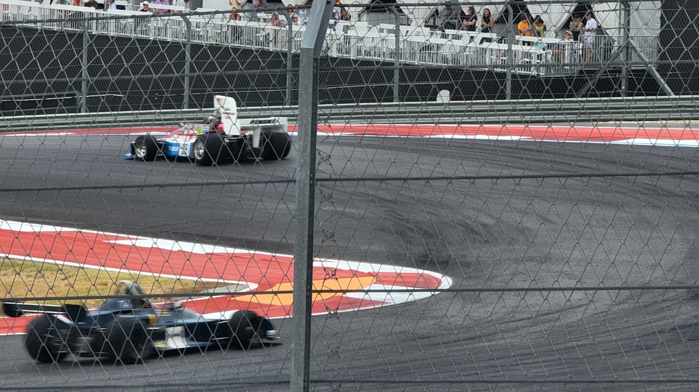
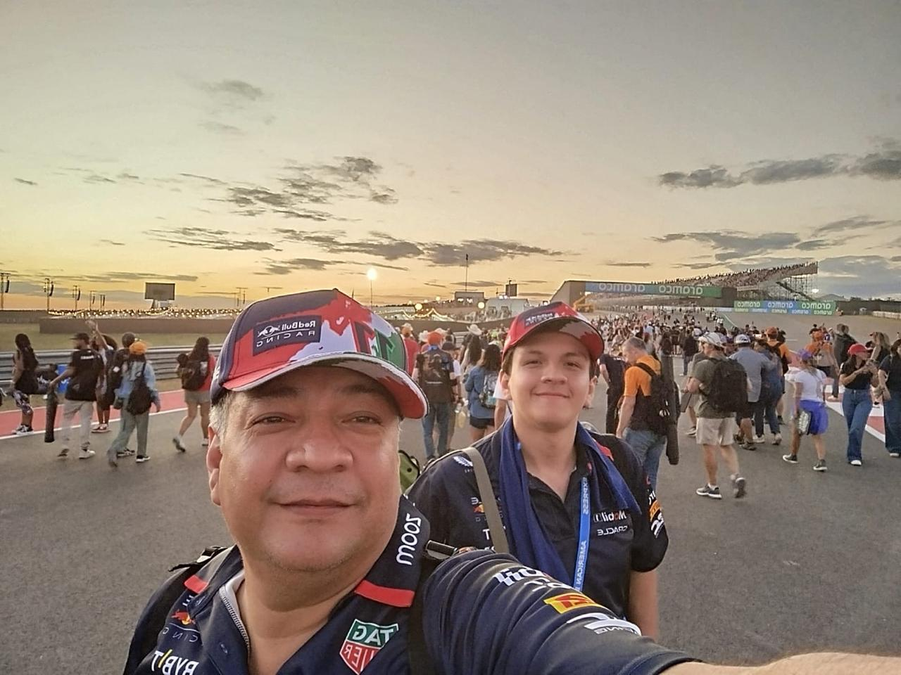
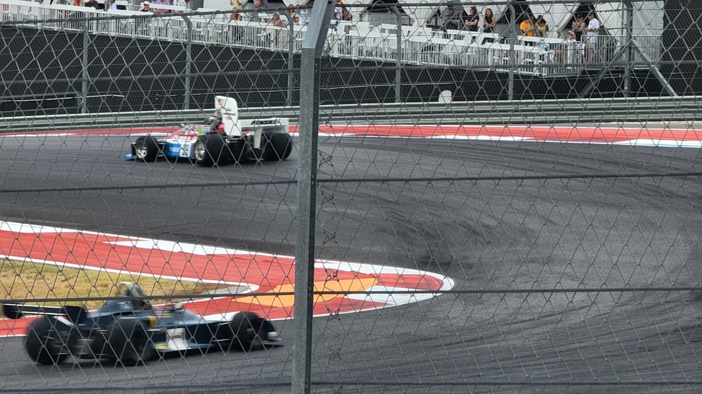
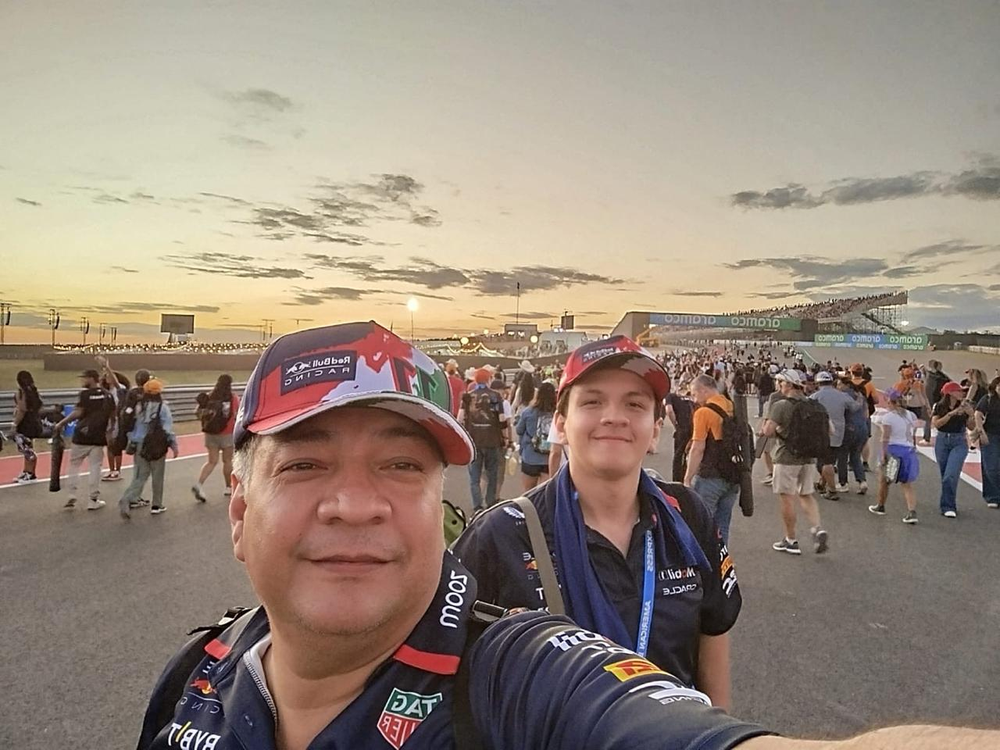

| Football | |
|---|---|
|
Cuando era niño me gustaba mucho el football, lo solia ver con mi papa casi muchos fines de semana mientras preparaba la carne asada, en primaria entre al equipo escolar de football, y aunque no fui para nada bueno, me divertia y hacia ejercicio, cuando tenia unos 8 o 9 años atendi un partido de los Tigres en el estadio universitario con mi papa y sus compañeros de trabajo.
Poco a poco me empece a alejar del football, deje de practicarlo y poco despues de verlo, pero nunca me dejo de gustar y muy de vez en cuando jugaba con mis amigos o mi papa. |

|
| Formula 1 y Extras | |
|---|---|


 



|
En pandemia me empezo a gustar el tenis, practicarlo mas que nada, mi papa construyo unas raquetas de madera para jugar y poco despues me compraron raquetas de verdad, pero deje de practicarlo por que no tenia con quien jugarlo.
Mas reciente en estos ultimos años el automovilismo me empezo a gustar, en especial la Formula 1 y WEC, mi papa y yo compramos la subscripcion a F1TV para ver las carreras en vivo y tener acceso a todo el contenido. En octubre del 2024 atendi el USGP en Austin los 3 dias con mi papa. |